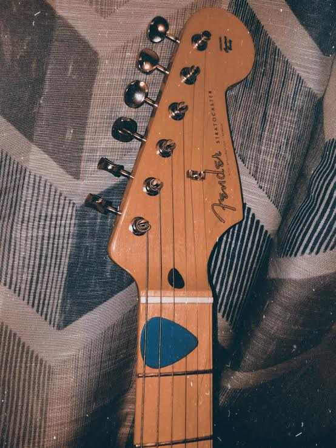

A few years ago, I had an idea that changed the way I played bass and guitar forever. I had recently bought my first bass, and was not used to alternate-picking over the thickness of a bass string. I felt as if the pick was not grasping the strings properly when I plucked them. On a whim, I took a lighter to one of my picks, and bent the tip up, slightly. This helped me play the bass better. I used this idea on the picks I use for guitar, as well, and just bent those less, since the gauges on my guitar strings are much smaller than those of a bass.
